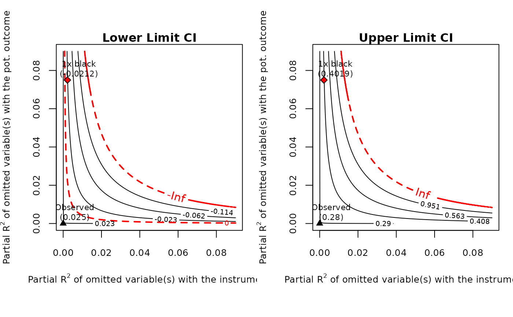

This function provides the contour plots of the sensitivity analysis results obtained with the function sensemakr for IV. It is basically a dispatcher to the core plot function ovb_contour_plot.
Arguments
- x
an object of class
iv.sensemakrcreated with thesensemakrfunction.- sensitivity.of
should the contour plot show adjusted lower limits of confidence intervals (
"lwr"), upper limit of confidence intervals ("upr") or t-values ("t-value")?- parm
contour plots of which estimate? Options are
ivfor instrumental variable estimates,fsfor first-stage estimates, andrffor reduced-form estimates.- ...
further arguments and graphical parameters.
Value
The function is called for its side effect of producing contour plots.
It invisibly returns the output from ovb_contour_plot.
Examples
data("card")
y <- card$lwage
d <- card$educ
z <- card$nearc4
x <- model.matrix( ~ exper + expersq + black + south + smsa + reg661 + reg662 +
reg663 + reg664 + reg665+ reg666 + reg667 + reg668 + smsa66,
data = card)
card.fit <- iv_fit(y, d, z, x)
card.sens <- sensemakr(card.fit, benchmark_covariates = "black")
plot(card.sens, lim = 0.09)
